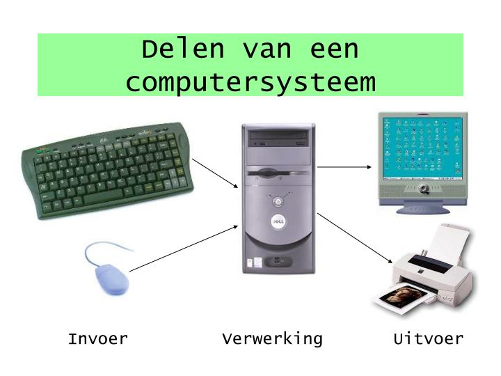

Gegevens zijn cijfers, losse feiten of symbolen zonder een betekenis. Een paar voorbeelden hiervan zijn "222", "roze" en "true". Ze vormen de basis van alle digitale informatie, maar zeggen zoals je kan begrijpen niet zoveel.
Informatie ontstaat wanneer gegevens verwerkt worden en in een context worden geplaats. Informatie is handige data die je kunt gebruiken om iets te begrijpen of een keuze te maken. Een voorbeeld van informatie is: "De temperatuur is 22 graden" omdat het duidelijk maakt wat het getal voorstelt - de hoeveelheid graden van de temperatuur. Als je het nog specifieker wilt maken, kan je zelfs nog het woord "celcius" voor het woord "graden" zetten: hierdoor wordt het nog duidelijker.
Invoer
Invoer is alles wat je aan een computer geeft om mee te werken, zoals het typen van tekst, het klikken met een computermuis of het uploaden van een nieuw bestand. De computer ontvangt al deze gegevens via invoerapparaten zoals het toetsenbord, muis, camera of microfoon.

Verwerking
Verwerking is wat de computer met al jouw ingevoerde gegevens doet. Een paar voorbeelden hiervan zijn het berekenen van een som, het sorteren van data, of het omzetten van tekst naar een beeld. De processor voert deze taken uit en zorgt dat de gegevens bruikbaar worden voor de gebruiker.
Uitvoer
Uitvoer is het resultaat dat je van de computer terugkrijgt. Een paar voorbeelden hiervan zijn tekst op het scherm, een geluid uit de speakers, een geprint document of een opgeslagen bestand. Uitvoerapparaten zoals luidsprekers, printers en monitoren maken dit zelfs zichtbaar of hoorbaar. Waarschijnlijk heb je zelf ook wel een paar uitvoerapparaten.
Video | Invoer tot uitvoer
Ben je benieuwd hoe dit systeem werkt? hier is een informatieve Youtube video!